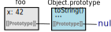
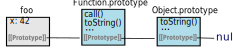

Author: Mihai Rotaru Date: 2018-06-14
JavaScript is a prototype-based language, thus it should come as no surprise
that a good grasp of how prototypes work is essential to any serious
JavaScript developer. I've struggled with it, until I read Kyle Simpson's
book
on the subject, which I cannot recommend enough. I wrote this post to
solidify my understanding; "if you can't explain it, you don't understand
it". As it turns out, the prototype mechanism is actually very simple and
elegant. However, it is not ideally suited for object-oriented programming as
in other languages, such as Java or C++. Using it like that complicates
things, but given that it is a common pattern it is still important to
understand all the implications; ES6 classes do not supersede the prototype
mechanism.
A prototype is just an object that is referenced by other objects via an
internal property. This allows one object access to properties (including
functions) which are actually set on another object. The JavaScript spec
calls this internal property "[[Prototype]] internal slot"
(§ 9.1)
and it is not the same thing as the prototype property; more on this later. When we say that
"foo is prototype-linked to bar" it means that foo's internal
[[Prototype]] is a reference to bar.
You probably know that all objects somehow have access to functions like toString() and hasOwnProperty(), without
you having to do anything. This is because all objects have Object.prototype in their prototype chain by default,
and properties are resolved recursively. If an object doesn't have the property we're trying to access,
the prototype chain will be traversed until it is found, or undefined is returned. Object.prototype is
normally the last link in the prototype chain, and it's [[Prototype]] is null.
const foo = { x: 42 } // by default, foo is prototype-linked to Object.prototype
Object.getPrototypeOf(foo) === Object.prototype // => true
foo.toString() // => '[object Object]' - inherited from Object.prototype
foo.hasOwnProperty('x') // => true
foo.hasOwnProperty('toString') // => false
There are two other ways of creating prototype links: one is direct (explicit) and the other
one is indirect (implicit). The direct way is by using Object.create().
It will return a new object,
with it's internal [[Prototype]] pointing to the object provided as the first parameter. [[Prototype]]
can be accessed directly as the __proto__ property, although it is recommend to use Object.getPrototypeOf() instead.
The prototype property is not synonymous with [[Prototype]], more on this later on.
const foo = { x: 42 }
const bar = Object.create(foo) // bar is prototype-linked to foo
Object.getPrototypeOf(bar) === foo // => true
bar.__proto__ === foo // => true
bar.x // => 42 - x was inherited from foo, through the prototype chain
bar.toString() // => '[object Object]' - toString() is inherited from Object.prototypeIn JavaScript, functions are "first-class objects". This means that we can
treat them as any other object - add and remove properties, pass them as
parameters, and so on. It also means that they have Object.prototype in
their prototype chain; so we can call familiar methods such as toString()
and hasOwnProperty(). You probably know that function objects have a few
more tricks up their sleeve; for example, when you invoke the call() method
of a function object, and give it an object as a parameter, that object will
become this when the function is executed.
Function objects have extra capabilities because they have another object
in their prototype chain, before Object.prototype: Function.prototype.
That's where methods like call(), apply() and bind() come from. It is also
interesting to note that Function.prototype also has it's own toString(),
different from Object.prototype.toString(). When accessing a property on an
object, the closest one in the prototype chain will be used. This can lead to
the situation we have with toString(), where one property shadows another.
This is also known as overriding.
function foo() {} // foo is a function object
foo.x = 42 // functions are objects, so we can set props on them
foo.addFive = function (n) { return n + 5 } // adding a function as a prop
foo.toString() // => 'function foo(){}'
foo.toString === Function.prototype.toString // => true
foo.toString === Object.prototype.toString // => false
When a function object is created, JavaScript will add a property to it,
"prototype". This "prototype" is an object with a single (non-internal)
property: "constructor" which is a reference back to the function. Objects
created by the function with new will be prototype-linked to the object at
the function's "prototype" property. So function objects have both
[[Prototype]] and the "prototype" property; it is important to note that
they are completely different objects.
function foo() {} // foo is a function object
typeof foo.prototype // => "object" (implicitly created by JavaScript)
foo.prototype.x = 42 // linked objects will be able to access 'x'
foo.y = 100 // functions are objects, so we can set props on them; but 'y' will not be inherited
const bar = new foo() // bar is prototype-linked to foo.prototype
bar.x // => 42 - "inherited" from foo.prototype
bar.y // => undefinedconstructor PropertyWe saw that when JS creates a function object, it also creates the prototype
object. This object has a "constructor" property, and it is a reference to
the function object. Because it's on the prototype, it will be inherited
by objects created by the function with new:
function foo() {}
foo.prototype.constructor === foo // => true
const obj = new foo()
obj.constructor === foo // => true
obj.hasOwnProperty('constructor') // => false - the 'constructor' property is inheritedHowever, it's not safe to assume that if obj.constructor === foo, it means
the object was created by foo. That's because the "prototype" property of
function objects can be changed, so prototype.constructor can point to anything:
function foo() {}
function bar() {}
foo.prototype = {
constructor: bar
}
const obj = new foo()
obj.constructor === bar // => true - even though foo created objIn JavaScript, any function becomes a constructor when called with new.
As we saw previously, even a function like function foo () {} will still
return a new object, prototype-linked to foo.prototype.
Just before executing a constructor call, JavaScript will create a brand new
object and it will set this to point to it for the duration of the
constructor function's execution. It will also set the object's internal
[[Prototype]] property to point to the function's prototype. At the end
of the execution, the return value of the function is this newly created
object; the class instance. JavaScript will automatically set it as the
return value. Note that this happens only if a function is called with new:
function Foo (initialCount) {
this.count = initialCount
}
Foo.prototype.incrementCount = function () {
this.count++
}
const o1 = new Foo(10) // o1: { count: 10 }
o1.incrementCount()
o1.count // => 11
const o2 = Foo(10) // o2: undefined; possible side-effect: window.count === 10
const o3 = {} // an empty object
Foo.call(o3, 10) // invoke Foo; it will run with o3 as `this`, will not create a new object
o3 // { count: 10 }When we call a function without new, it won't implicitly create and return
a new object. So what will this point to, then ? Because this is bound at
run-time, it really depends on how the function was called. If a function is
not called as the prop of an object, and is not bound (with bind or with
call/apply) then this will be the global object. For browsers, that's
window; hence the unwanted side-effect in the example above. More details
on this.
We've seen how the prototype chain can be used to enable objects to delegate
functionality to other objects; JavaScript is a dynamic, prototype-based language.
We can also use it as a class-based OO language; we've already seen some of the
hallmarks - using new to create new objects, the constructor property.
But there are a few more things that happen in class-based languages. One such thing is calling the "parent" constructor; when the sub-class is instantiated, one would expect the super-class constructor to be called. Therefore, we need to make sure to call the parent function, which is also the super-class constructor:
function Bar (initialCount) {
Foo.call(this, initialCount)
}We also need a way for Bar to inherit from Foo; this is done via the
prototype chain:
Bar.prototype = Object.create(Foo)Why not just Bar.prototype = Foo.prototype ? Because then the "prototype"
property of both function objects would reference the exact same object. If
you add something to Bar's prototype, it would also be inherited by all
Foo instances. This is not desirable because super classes should not
inherit from their sub-classes.
We could also try Bar.prototype = new Foo(); this would also make
inheritance happen. However, this can have unwanted side-effects. Let's say
we create a Foo instance when the user clicks a button, and we log that
action in the Foo function. However, if we check the logs, we will see that
we always get an entry without the user doing anything - it's because we run
the Foo function to setup Bar's prototype.
In most cases, creating a property on an object will succeed. But there are two situations in which that will not happen, at least not as expected. Both of them occur when JS finds an object in the target object's prototype chain which already has a property with the same name as the one we're trying to set/create on the target object.
In JS, if we want to run a function when setting a property, we can can use a
setter. In this case, JS will call the setter. The setter function can
use this, which will be a reference to the target object, not the linked
object:
const foo = {
set myProp(value) {
this.x = value + 1
}
}
const bar = Object.create(foo) // 'bar' is the target object
bar.myProp = 10 // the setter will be called; `this` will be `bar`
bar.myProp // => undefined
bar.x // => 11We can create read-only properties using Object.defineProperty:
const foo = {}
Object.defineProperty(foo, 'myProp', {
value: 42,
writable: false,
})
foo.myProp // => 42
foo.myProp = 100 // ignored, or throws in "strict" mode
foo.myProp // => 42If foo is part of the prototype chain for bar, then we can't set a
"myProp" property on bar. In other words, a read-only prop somewhere down
the line in the prototype chain will prevent assigning a property with that
name on the target object. In strict mode, an exception will be thrown;
otherwise the assignment will just silently fail.
// continuing previous example
const bar = Object.create(foo)
bar.myProp = 100 // nothing happens !
bar.myProp // => 42This is to prevent shadowing - which is what happens when two prototype-linked objects have properties with the same name; when reading the value of that prop, the first one will be returned, thus "shadowing" the second one. I'm not sure why this is done just for read-only properties, but that's how it is. Essentially, it means that if an object has a 'myProp' property that is read-only, then it can't be shadowed by objects which will add this object to their prototype chain. But, if the property is writable, you're free to shadow it !
const foo = {}
Object.defineProperties(foo, {
'myReadOnlyProp': { value: 42, writable: false },
'myWritableProp': { value: 10, writable: true }
})
const bar = Object.create(foo)
bar.myReadOnlyProp = 100 // can't shadow read-only props, nothing happens
bar.myReadOnlyProp // => 42
bar.myWritableProp = 100 // can shadow writable props; prop created on `bar`
foo.myWritableProp // => 10; the shadowed property is unaffected
bar.myWritableProp // => 100JS automatically adds a "prototype" property to function objects. When we
instantiate objects by calling the function as a constructor (with new),
the created objects will have access to properties on the prototype object.
One such property is the constructor property, added by JS and which
normally points to the function. We can create prototype-linked objects
directly, with Object.create.
An object's prototype property is not the same as it's internal
[[Prototype]] link; if the object is a function, then it's prototype will
become the [[Prototype]] of objects created when that function is called as
a constructor. We can use __proto__ or Object.getPrototypeOf to get a
reference to the object referenced by the internal [[Prototype]] slot, and
we can use either __proto__ or Object.setPrototypeOf to set it's value.
Reading the value of a property that is not on the target object will
traverse the prototype chain and return the first one found, or undefined,
whereas the algorithm for setting such properties is more complex, calling
the first found setter and preventing the shadowing of read-only properties.